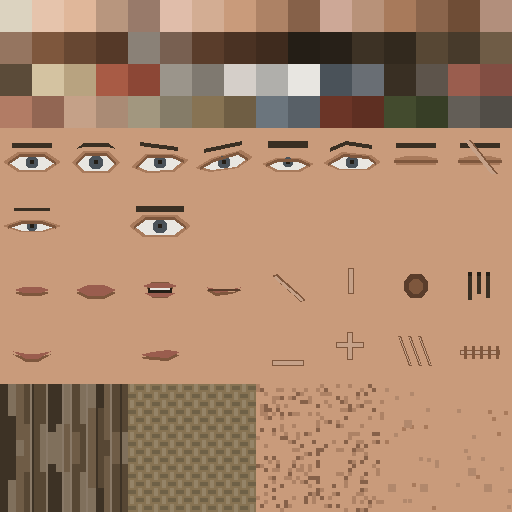
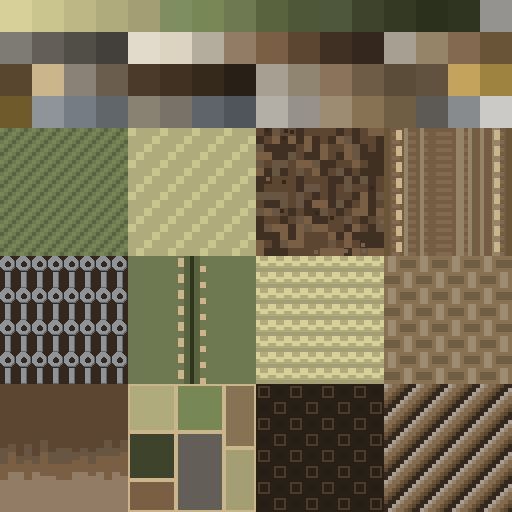
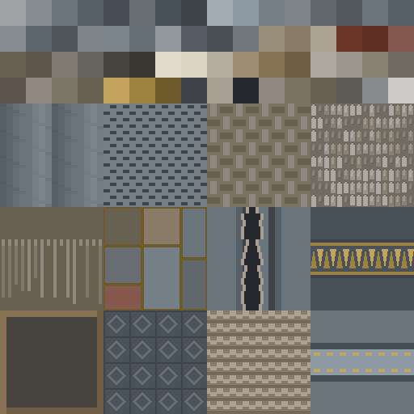
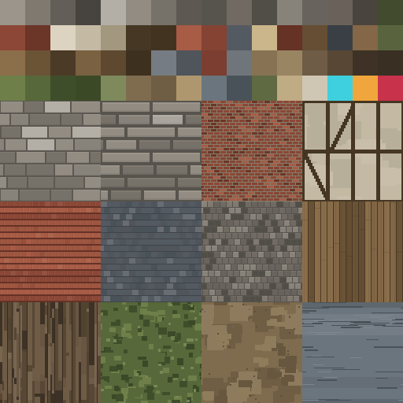
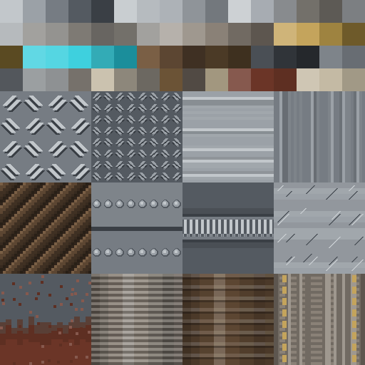
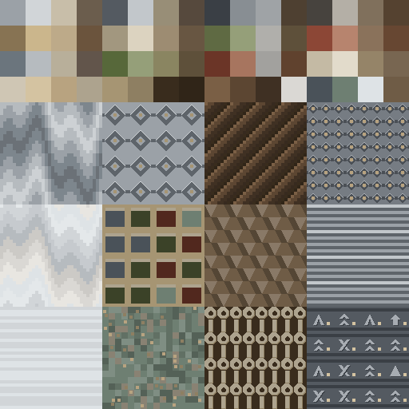
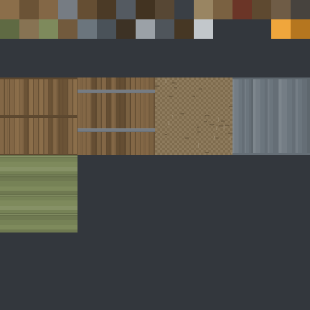
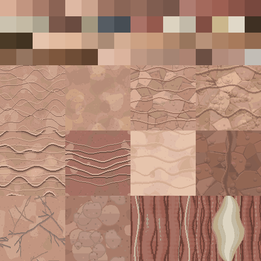
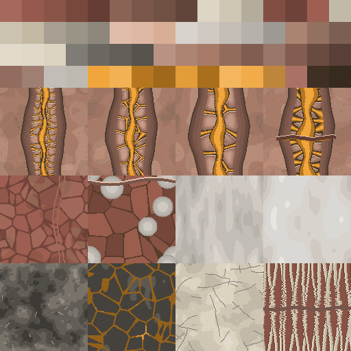

Texturatlanten
Erzeugt von tools/atlas.py aus den SVG-Quellen in assets/texturen/quelle/. Ein Farbfeld wird in der Mitte gesampelt, eine Kachel mit REPEAT. 128 px = 4,8 m — damit ist die Steinreihe 0,6 m genau 16 px hoch, und daran liest der Spieler 120 m Mauer ab.
TEX-BOSS-01
1024x1024 px · 256 Farbfelder ·
48 Kacheln · TEX-BOSS-01.png · TEX-BOSS-01.emissiv.png
Kacheln, im Verbund
kachel_bo_haut_fein je Kopie 4.8 m · 4x2 gekachelt · Naht in der Bildmitte
kachel_bo_haut je Kopie 4.8 m · 4x2 gekachelt · Naht in der Bildmitte
kachel_bo_haut_grob je Kopie 4.8 m · 4x2 gekachelt · Naht in der Bildmitte
kachel_bo_haut_falte je Kopie 4.8 m · 4x2 gekachelt · Naht in der Bildmitte
kachel_bo_haut_falte_fein je Kopie 4.8 m · 4x2 gekachelt · Naht in der Bildmitte
kachel_bo_haut_gelenk je Kopie 4.8 m · 4x2 gekachelt · Naht in der Bildmitte
kachel_bo_haut_ader je Kopie 4.8 m · 4x2 gekachelt · Naht in der Bildmitte
kachel_bo_haut_schwiele je Kopie 4.8 m · 4x2 gekachelt · Naht in der Bildmitte
kachel_bo_haut_beule je Kopie 4.8 m · 4x2 gekachelt · Naht in der Bildmitte
kachel_bo_haut_gedehnt je Kopie 4.8 m · 4x2 gekachelt · Naht in der Bildmitte
kachel_bo_haut_bauch je Kopie 4.8 m · 4x2 gekachelt · Naht in der Bildmitte
kachel_bo_haut_ruecken je Kopie 4.8 m · 4x2 gekachelt · Naht in der Bildmitte
kachel_bo_muskel je Kopie 4.8 m · 4x2 gekachelt · Naht in der Bildmitte
kachel_bo_muskel_fein je Kopie 4.8 m · 4x2 gekachelt · Naht in der Bildmitte
kachel_bo_muskel_grob je Kopie 4.8 m · 4x2 gekachelt · Naht in der Bildmitte
kachel_bo_muskel_sehne je Kopie 4.8 m · 4x2 gekachelt · Naht in der Bildmitte
kachel_bo_sehne je Kopie 4.8 m · 4x2 gekachelt · Naht in der Bildmitte
kachel_bo_sehnenriss je Kopie 4.8 m · 4x2 gekachelt · Naht in der Bildmitte
kachel_bo_narbenfeld je Kopie 4.8 m · 4x2 gekachelt · Naht in der Bildmitte
kachel_bo_narbenfeld_quer je Kopie 4.8 m · 4x2 gekachelt · Naht in der Bildmitte
kachel_bo_narbenfeld_dicht je Kopie 4.8 m · 4x2 gekachelt · Naht in der Bildmitte
kachel_bo_narbe_frisch je Kopie 4.8 m · 4x2 gekachelt · Naht in der Bildmitte
kachel_bo_narbe_einzeln je Kopie 4.8 m · 4x2 gekachelt · Naht in der Bildmitte
kachel_bo_fesselabdruck je Kopie 4.8 m · 4x2 gekachelt · Naht in der Bildmitte
kachel_bo_kettenglied je Kopie 4.8 m · 4x2 gekachelt · Naht in der Bildmitte
kachel_bo_kettenglied_leicht je Kopie 4.8 m · 4x2 gekachelt · Naht in der Bildmitte
kachel_bo_kettenglied_schwer je Kopie 4.8 m · 4x2 gekachelt · Naht in der Bildmitte
kachel_bo_kette_blank je Kopie 4.8 m · 4x2 gekachelt · Naht in der Bildmitte
kachel_bo_riemen je Kopie 4.8 m · 4x2 gekachelt · Naht in der Bildmitte
kachel_bo_beschlag je Kopie 4.8 m · 4x2 gekachelt · Naht in der Bildmitte
kachel_bo_fessel je Kopie 4.8 m · 4x2 gekachelt · Naht in der Bildmitte
kachel_bo_cortex_klein je Kopie 4.8 m · 4x2 gekachelt · Naht in der Bildmitte
kachel_bo_cortex je Kopie 4.8 m · 4x2 gekachelt · Naht in der Bildmitte
kachel_bo_cortex_gross je Kopie 4.8 m · 4x2 gekachelt · Naht in der Bildmitte
kachel_bo_cortex_angeschnitten je Kopie 4.8 m · 4x2 gekachelt · Naht in der Bildmitte
kachel_bo_cortex_getroffen je Kopie 4.8 m · 4x2 gekachelt · Naht in der Bildmitte
kachel_bo_zahnreihe je Kopie 4.8 m · 4x2 gekachelt · Naht in der Bildmitte
kachel_bo_haar je Kopie 4.8 m · 4x2 gekachelt · Naht in der Bildmitte
kachel_bo_wunde je Kopie 4.8 m · 4x2 gekachelt · Naht in der Bildmitte
kachel_bo_wunde_tief je Kopie 4.8 m · 4x2 gekachelt · Naht in der Bildmitte
kachel_bo_knochen je Kopie 4.8 m · 4x2 gekachelt · Naht in der Bildmitte
kachel_bo_dampf je Kopie 4.8 m · 4x2 gekachelt · Naht in der Bildmitte
kachel_bo_dampf_dicht je Kopie 4.8 m · 4x2 gekachelt · Naht in der Bildmitte
kachel_bo_asche je Kopie 4.8 m · 4x2 gekachelt · Naht in der Bildmitte
kachel_bo_aschefall je Kopie 4.8 m · 4x2 gekachelt · Naht in der Bildmitte
kachel_bo_glut je Kopie 4.8 m · 4x2 gekachelt · Naht in der Bildmitte
kachel_bo_panzer je Kopie 4.8 m · 4x2 gekachelt · Naht in der Bildmitte
kachel_bo_haut_kopf je Kopie 4.8 m · 4x2 gekachelt · Naht in der Bildmitte
TEX-BOSS-02
1024x1024 px · 256 Farbfelder ·
48 Kacheln · TEX-BOSS-02.png · TEX-BOSS-02.emissiv.png
Kacheln, im Verbund
kachel_da_haut_fein je Kopie 4.8 m · 4x2 gekachelt · Naht in der Bildmitte
kachel_da_haut je Kopie 4.8 m · 4x2 gekachelt · Naht in der Bildmitte
kachel_da_haut_grob je Kopie 4.8 m · 4x2 gekachelt · Naht in der Bildmitte
kachel_da_haut_falte je Kopie 4.8 m · 4x2 gekachelt · Naht in der Bildmitte
kachel_da_haut_falte_fein je Kopie 4.8 m · 4x2 gekachelt · Naht in der Bildmitte
kachel_da_haut_gelenk je Kopie 4.8 m · 4x2 gekachelt · Naht in der Bildmitte
kachel_da_haut_ader je Kopie 4.8 m · 4x2 gekachelt · Naht in der Bildmitte
kachel_da_haut_schwiele je Kopie 4.8 m · 4x2 gekachelt · Naht in der Bildmitte
kachel_da_haut_beule je Kopie 4.8 m · 4x2 gekachelt · Naht in der Bildmitte
kachel_da_haut_gedehnt je Kopie 4.8 m · 4x2 gekachelt · Naht in der Bildmitte
kachel_da_haut_bauch je Kopie 4.8 m · 4x2 gekachelt · Naht in der Bildmitte
kachel_da_haut_kopf je Kopie 4.8 m · 4x2 gekachelt · Naht in der Bildmitte
kachel_da_muskel je Kopie 4.8 m · 4x2 gekachelt · Naht in der Bildmitte
kachel_da_muskel_fein je Kopie 4.8 m · 4x2 gekachelt · Naht in der Bildmitte
kachel_da_muskel_lang je Kopie 4.8 m · 4x2 gekachelt · Naht in der Bildmitte
kachel_da_muskel_sehne je Kopie 4.8 m · 4x2 gekachelt · Naht in der Bildmitte
kachel_da_sehne je Kopie 4.8 m · 4x2 gekachelt · Naht in der Bildmitte
kachel_da_sehne_quer je Kopie 4.8 m · 4x2 gekachelt · Naht in der Bildmitte
kachel_da_sehnenriss je Kopie 4.8 m · 4x2 gekachelt · Naht in der Bildmitte
kachel_da_schwach_intakt je Kopie 4.8 m · 4x2 gekachelt · Naht in der Bildmitte
kachel_da_schwach_angeschlagen je Kopie 4.8 m · 4x2 gekachelt · Naht in der Bildmitte
kachel_da_schwach_zerstoert je Kopie 4.8 m · 4x2 gekachelt · Naht in der Bildmitte
kachel_da_schwach_schulter je Kopie 4.8 m · 4x2 gekachelt · Naht in der Bildmitte
kachel_da_schwach_huefte je Kopie 4.8 m · 4x2 gekachelt · Naht in der Bildmitte
kachel_da_narbenfeld je Kopie 4.8 m · 4x2 gekachelt · Naht in der Bildmitte
kachel_da_narbenfeld_quer je Kopie 4.8 m · 4x2 gekachelt · Naht in der Bildmitte
kachel_da_narbe_einzeln je Kopie 4.8 m · 4x2 gekachelt · Naht in der Bildmitte
kachel_da_haar je Kopie 4.8 m · 4x2 gekachelt · Naht in der Bildmitte
kachel_da_haar_dicht je Kopie 4.8 m · 4x2 gekachelt · Naht in der Bildmitte
kachel_da_zahnreihe je Kopie 4.8 m · 4x2 gekachelt · Naht in der Bildmitte
kachel_da_cortex_klein je Kopie 4.8 m · 4x2 gekachelt · Naht in der Bildmitte
kachel_da_cortex je Kopie 4.8 m · 4x2 gekachelt · Naht in der Bildmitte
kachel_da_cortex_gross je Kopie 4.8 m · 4x2 gekachelt · Naht in der Bildmitte
kachel_da_cortex_angeschnitten je Kopie 4.8 m · 4x2 gekachelt · Naht in der Bildmitte
kachel_da_cortex_getroffen je Kopie 4.8 m · 4x2 gekachelt · Naht in der Bildmitte
kachel_da_wunde je Kopie 4.8 m · 4x2 gekachelt · Naht in der Bildmitte
kachel_da_wunde_tief je Kopie 4.8 m · 4x2 gekachelt · Naht in der Bildmitte
kachel_da_knochen je Kopie 4.8 m · 4x2 gekachelt · Naht in der Bildmitte
kachel_da_dampf je Kopie 4.8 m · 4x2 gekachelt · Naht in der Bildmitte
kachel_da_dampf_dicht je Kopie 4.8 m · 4x2 gekachelt · Naht in der Bildmitte
kachel_da_asche je Kopie 4.8 m · 4x2 gekachelt · Naht in der Bildmitte
kachel_da_aschefall je Kopie 4.8 m · 4x2 gekachelt · Naht in der Bildmitte
kachel_da_glut je Kopie 4.8 m · 4x2 gekachelt · Naht in der Bildmitte
kachel_da_riemen je Kopie 4.8 m · 4x2 gekachelt · Naht in der Bildmitte
kachel_da_fesselabdruck je Kopie 4.8 m · 4x2 gekachelt · Naht in der Bildmitte
kachel_da_haut_hand je Kopie 4.8 m · 4x2 gekachelt · Naht in der Bildmitte
kachel_da_haut_ruecken je Kopie 4.8 m · 4x2 gekachelt · Naht in der Bildmitte
kachel_da_verkohlt je Kopie 4.8 m · 4x2 gekachelt · Naht in der Bildmitte
TEX-BOSS-03
1024x1024 px · 256 Farbfelder ·
48 Kacheln · TEX-BOSS-03.png · TEX-BOSS-03.emissiv.png
Kacheln, im Verbund
kachel_bu_panzer je Kopie 4.8 m · 4x2 gekachelt · Naht in der Bildmitte
kachel_bu_panzer_gross je Kopie 4.8 m · 4x2 gekachelt · Naht in der Bildmitte
kachel_bu_panzer_klein je Kopie 4.8 m · 4x2 gekachelt · Naht in der Bildmitte
kachel_bu_panzer_riss je Kopie 4.8 m · 4x2 gekachelt · Naht in der Bildmitte
kachel_bu_panzer_riss_gross je Kopie 4.8 m · 4x2 gekachelt · Naht in der Bildmitte
kachel_bu_panzer_bruch je Kopie 4.8 m · 4x2 gekachelt · Naht in der Bildmitte
kachel_bu_panzer_bruch_gross je Kopie 4.8 m · 4x2 gekachelt · Naht in der Bildmitte
kachel_bu_panzer_bruch_klein je Kopie 4.8 m · 4x2 gekachelt · Naht in der Bildmitte
kachel_bu_fuge je Kopie 4.8 m · 4x2 gekachelt · Naht in der Bildmitte
kachel_bu_beschlag je Kopie 4.8 m · 4x2 gekachelt · Naht in der Bildmitte
kachel_bu_haut_fein je Kopie 4.8 m · 4x2 gekachelt · Naht in der Bildmitte
kachel_bu_haut je Kopie 4.8 m · 4x2 gekachelt · Naht in der Bildmitte
kachel_bu_haut_grob je Kopie 4.8 m · 4x2 gekachelt · Naht in der Bildmitte
kachel_bu_haut_falte je Kopie 4.8 m · 4x2 gekachelt · Naht in der Bildmitte
kachel_bu_haut_gelenk je Kopie 4.8 m · 4x2 gekachelt · Naht in der Bildmitte
kachel_bu_haut_ader je Kopie 4.8 m · 4x2 gekachelt · Naht in der Bildmitte
kachel_bu_haut_schwiele je Kopie 4.8 m · 4x2 gekachelt · Naht in der Bildmitte
kachel_bu_haut_beule je Kopie 4.8 m · 4x2 gekachelt · Naht in der Bildmitte
kachel_bu_haut_gedehnt je Kopie 4.8 m · 4x2 gekachelt · Naht in der Bildmitte
kachel_bu_haut_bauch je Kopie 4.8 m · 4x2 gekachelt · Naht in der Bildmitte
kachel_bu_haut_kopf je Kopie 4.8 m · 4x2 gekachelt · Naht in der Bildmitte
kachel_bu_haut_ruecken je Kopie 4.8 m · 4x2 gekachelt · Naht in der Bildmitte
kachel_bu_muskel je Kopie 4.8 m · 4x2 gekachelt · Naht in der Bildmitte
kachel_bu_muskel_fein je Kopie 4.8 m · 4x2 gekachelt · Naht in der Bildmitte
kachel_bu_muskel_sehne je Kopie 4.8 m · 4x2 gekachelt · Naht in der Bildmitte
kachel_bu_sehne je Kopie 4.8 m · 4x2 gekachelt · Naht in der Bildmitte
kachel_bu_sehnenriss je Kopie 4.8 m · 4x2 gekachelt · Naht in der Bildmitte
kachel_bu_narbenfeld je Kopie 4.8 m · 4x2 gekachelt · Naht in der Bildmitte
kachel_bu_narbe_frisch je Kopie 4.8 m · 4x2 gekachelt · Naht in der Bildmitte
kachel_bu_cortex_klein je Kopie 4.8 m · 4x2 gekachelt · Naht in der Bildmitte
kachel_bu_cortex je Kopie 4.8 m · 4x2 gekachelt · Naht in der Bildmitte
kachel_bu_cortex_gross je Kopie 4.8 m · 4x2 gekachelt · Naht in der Bildmitte
kachel_bu_cortex_gepanzert je Kopie 4.8 m · 4x2 gekachelt · Naht in der Bildmitte
kachel_bu_cortex_angeschnitten je Kopie 4.8 m · 4x2 gekachelt · Naht in der Bildmitte
kachel_bu_cortex_getroffen je Kopie 4.8 m · 4x2 gekachelt · Naht in der Bildmitte
kachel_bu_zahnreihe je Kopie 4.8 m · 4x2 gekachelt · Naht in der Bildmitte
kachel_bu_haar je Kopie 4.8 m · 4x2 gekachelt · Naht in der Bildmitte
kachel_bu_wunde je Kopie 4.8 m · 4x2 gekachelt · Naht in der Bildmitte
kachel_bu_wunde_tief je Kopie 4.8 m · 4x2 gekachelt · Naht in der Bildmitte
kachel_bu_knochen je Kopie 4.8 m · 4x2 gekachelt · Naht in der Bildmitte
kachel_bu_dampf je Kopie 4.8 m · 4x2 gekachelt · Naht in der Bildmitte
kachel_bu_dampf_dicht je Kopie 4.8 m · 4x2 gekachelt · Naht in der Bildmitte
kachel_bu_asche je Kopie 4.8 m · 4x2 gekachelt · Naht in der Bildmitte
kachel_bu_aschefall je Kopie 4.8 m · 4x2 gekachelt · Naht in der Bildmitte
kachel_bu_glut je Kopie 4.8 m · 4x2 gekachelt · Naht in der Bildmitte
kachel_bu_riemen je Kopie 4.8 m · 4x2 gekachelt · Naht in der Bildmitte
kachel_bu_fesselabdruck je Kopie 4.8 m · 4x2 gekachelt · Naht in der Bildmitte
kachel_bu_verkohlt je Kopie 4.8 m · 4x2 gekachelt · Naht in der Bildmitte
TEX-BOSS-04
1024x1024 px · 256 Farbfelder ·
48 Kacheln · TEX-BOSS-04.png · TEX-BOSS-04.emissiv.png
Kacheln, im Verbund
kachel_as_haut_verkohlt je Kopie 4.8 m · 4x2 gekachelt · Naht in der Bildmitte
kachel_as_haut_verkohlt_fein je Kopie 4.8 m · 4x2 gekachelt · Naht in der Bildmitte
kachel_as_haut_verkohlt_grob je Kopie 4.8 m · 4x2 gekachelt · Naht in der Bildmitte
kachel_as_kruste_kalt je Kopie 4.8 m · 4x2 gekachelt · Naht in der Bildmitte
kachel_as_kruste_fein je Kopie 4.8 m · 4x2 gekachelt · Naht in der Bildmitte
kachel_as_kruste_mittel je Kopie 4.8 m · 4x2 gekachelt · Naht in der Bildmitte
kachel_as_glut je Kopie 4.8 m · 4x2 gekachelt · Naht in der Bildmitte
kachel_as_glut_offen je Kopie 4.8 m · 4x2 gekachelt · Naht in der Bildmitte
kachel_as_glut_verkrustet je Kopie 4.8 m · 4x2 gekachelt · Naht in der Bildmitte
kachel_as_glut_erloschen je Kopie 4.8 m · 4x2 gekachelt · Naht in der Bildmitte
kachel_as_muskel_frei je Kopie 4.8 m · 4x2 gekachelt · Naht in der Bildmitte
kachel_as_muskel_frei_fein je Kopie 4.8 m · 4x2 gekachelt · Naht in der Bildmitte
kachel_as_muskel_frei_grob je Kopie 4.8 m · 4x2 gekachelt · Naht in der Bildmitte
kachel_as_muskel_sehne je Kopie 4.8 m · 4x2 gekachelt · Naht in der Bildmitte
kachel_as_sehne je Kopie 4.8 m · 4x2 gekachelt · Naht in der Bildmitte
kachel_as_sehnenriss je Kopie 4.8 m · 4x2 gekachelt · Naht in der Bildmitte
kachel_as_asche je Kopie 4.8 m · 4x2 gekachelt · Naht in der Bildmitte
kachel_as_aschefall je Kopie 4.8 m · 4x2 gekachelt · Naht in der Bildmitte
kachel_as_aschefall_dicht je Kopie 4.8 m · 4x2 gekachelt · Naht in der Bildmitte
kachel_as_dampf je Kopie 4.8 m · 4x2 gekachelt · Naht in der Bildmitte
kachel_as_dampf_dicht je Kopie 4.8 m · 4x2 gekachelt · Naht in der Bildmitte
kachel_as_knochen je Kopie 4.8 m · 4x2 gekachelt · Naht in der Bildmitte
kachel_as_zahnreihe je Kopie 4.8 m · 4x2 gekachelt · Naht in der Bildmitte
kachel_as_cortex_klein je Kopie 4.8 m · 4x2 gekachelt · Naht in der Bildmitte
kachel_as_cortex je Kopie 4.8 m · 4x2 gekachelt · Naht in der Bildmitte
kachel_as_cortex_gross je Kopie 4.8 m · 4x2 gekachelt · Naht in der Bildmitte
kachel_as_cortex_angeschnitten je Kopie 4.8 m · 4x2 gekachelt · Naht in der Bildmitte
kachel_as_cortex_getroffen je Kopie 4.8 m · 4x2 gekachelt · Naht in der Bildmitte
kachel_as_haut_kopf je Kopie 4.8 m · 4x2 gekachelt · Naht in der Bildmitte
kachel_as_haut_brust je Kopie 4.8 m · 4x2 gekachelt · Naht in der Bildmitte
kachel_as_haut_schulter je Kopie 4.8 m · 4x2 gekachelt · Naht in der Bildmitte
kachel_as_haut_hals je Kopie 4.8 m · 4x2 gekachelt · Naht in der Bildmitte
kachel_as_haut_falte je Kopie 4.8 m · 4x2 gekachelt · Naht in der Bildmitte
kachel_as_haut_gelenk je Kopie 4.8 m · 4x2 gekachelt · Naht in der Bildmitte
kachel_as_haut_ader je Kopie 4.8 m · 4x2 gekachelt · Naht in der Bildmitte
kachel_as_haut_beule je Kopie 4.8 m · 4x2 gekachelt · Naht in der Bildmitte
kachel_as_haut_gedehnt je Kopie 4.8 m · 4x2 gekachelt · Naht in der Bildmitte
kachel_as_wunde je Kopie 4.8 m · 4x2 gekachelt · Naht in der Bildmitte
kachel_as_wunde_tief je Kopie 4.8 m · 4x2 gekachelt · Naht in der Bildmitte
kachel_as_narbenfeld je Kopie 4.8 m · 4x2 gekachelt · Naht in der Bildmitte
kachel_as_schwiele je Kopie 4.8 m · 4x2 gekachelt · Naht in der Bildmitte
kachel_as_haar je Kopie 4.8 m · 4x2 gekachelt · Naht in der Bildmitte
kachel_as_panzer je Kopie 4.8 m · 4x2 gekachelt · Naht in der Bildmitte
kachel_as_panzer_bruch je Kopie 4.8 m · 4x2 gekachelt · Naht in der Bildmitte
kachel_as_fuge je Kopie 4.8 m · 4x2 gekachelt · Naht in der Bildmitte
kachel_as_riemen je Kopie 4.8 m · 4x2 gekachelt · Naht in der Bildmitte
kachel_as_kettenglied je Kopie 4.8 m · 4x2 gekachelt · Naht in der Bildmitte
kachel_as_fesselabdruck je Kopie 4.8 m · 4x2 gekachelt · Naht in der Bildmitte
TEX-CHAR-01
512x512 px · 64 Farbfelder ·
12 Kacheln · TEX-CHAR-01.png

Farbfelder
haut_1_licht #DCD3C0haut_1_hell #E6C4AChaut_1 #E0B79Ahaut_1_dunkel #B8967Ehaut_1_tief #987A6Ahaut_2_licht #E0BDAAhaut_2_hell #D3AD93haut_2 #C99B7Bhaut_2_dunkel #AD8265haut_2_tief #866149haut_3_licht #CDA897haut_3_hell #B89279haut_3 #A87A5Bhaut_3_dunkel #8A644Bhaut_3_tief #6F4D36haut_4_licht #B28F7Chaut_4_hell #957560haut_4 #7E573Dhaut_4_dunkel #674732haut_4_tief #553928haut_5_licht #8A8177haut_5_hell #786051haut_5 #5A3D2Bhaut_5_dunkel #4A3223haut_5_tief #3F2B1Ehaar_schwarz #241E16haar_schwarz_dunkel #272018haar_dunkelbraun #3D3225haar_dunkelbraun_dunkel #32291Ehaar_braun #574734haar_braun_dunkel #473A2Bhaar_hellbraun #6F5C46haar_hellbraun_dunkel #5B4B39haar_blond #D4C3A1haar_blond_dunkel #B8A380haar_rot #A85B45haar_rot_dunkel #8C4736haar_grau #9B958Bhaar_grau_dunkel #7F7970haar_weiss #D5CFC9haar_weiss_dunkel #B0AFABauge_weiss #E8E6E1auge_iris #4A5259auge_iris_hell #696E74augenbraue #392F23augenbraue_hell #5D544Blippe #9A5D4Elippe_dunkel #824E43wange #B27C65wange_dunkel #926653narbe #C5A188narbe_dunkel #AA8B75zivil_1 #A2977Fzivil_1_dunkel #857C68zivil_2 #877353zivil_2_dunkel #6F5E44zivil_3 #6B757Dzivil_3_dunkel #586067zivil_4 #6B3527zivil_4_dunkel #5E2F22zivil_5 #434B2Ezivil_5_dunkel #373E26zivil_6 #635E57zivil_6_dunkel #514D47
Kacheln, im Verbund
kachel_gesicht_augen_a je Kopie 4.8 m · 4x2 gekachelt · Naht in der Bildmitte
kachel_gesicht_augen_b je Kopie 4.8 m · 4x2 gekachelt · Naht in der Bildmitte
kachel_gesicht_augen_c je Kopie 4.8 m · 4x2 gekachelt · Naht in der Bildmitte
kachel_gesicht_augen_d je Kopie 4.8 m · 4x2 gekachelt · Naht in der Bildmitte
kachel_gesicht_mund_a je Kopie 4.8 m · 4x2 gekachelt · Naht in der Bildmitte
kachel_gesicht_mund_b je Kopie 4.8 m · 4x2 gekachelt · Naht in der Bildmitte
kachel_gesicht_narbe_a je Kopie 4.8 m · 4x2 gekachelt · Naht in der Bildmitte
kachel_gesicht_narbe_b je Kopie 4.8 m · 4x2 gekachelt · Naht in der Bildmitte
kachel_haar_struktur je Kopie 4.8 m · 4x2 gekachelt · Naht in der Bildmitte
kachel_stoff_grob je Kopie 4.8 m · 4x2 gekachelt · Naht in der Bildmitte
kachel_bartschatten je Kopie 4.8 m · 4x2 gekachelt · Naht in der Bildmitte
kachel_sommersprossen je Kopie 4.8 m · 4x2 gekachelt · Naht in der Bildmitte
TEX-CHAR-02
512x512 px · 64 Farbfelder ·
12 Kacheln · TEX-CHAR-02.png

Farbfelder
uniform_rekrut_licht #D7D098uniform_rekrut_hell #CAC48Funiform_rekrut #BDB786uniform_rekrut_dunkel #B0AB7Duniform_rekrut_tief #A39E74uniform_vanguard_licht #7F8E60uniform_vanguard_hell #778755uniform_vanguard #6F7951uniform_vanguard_dunkel #59643Funiform_vanguard_tief #4E5737uniform_elite_licht #4E563Buniform_elite_hell #3D442Buniform_elite #333923uniform_elite_dunkel #2B301Duniform_elite_tief #2F3420hose_licht #949390hose_hell #7E7A74hose #635E57hose_dunkel #514D47hose_tief #433F3Ahemd_hell #E2DBCBhemd #DCD3C0hemd_dunkel #B4AD9Dleder_licht #927C66leder_hell #7A5F45leder #5C4632leder_dunkel #3F3023leder_tief #34271Dgurt_licht #A7A092gurt_hell #958468gurt #826950gurt_dunkel #6A5438gurt_tief #59462Fgurt_naht #CBB68Cstiefel_licht #8A8177stiefel_hell #6B5D4Dstiefel #4B3929stiefel_dunkel #403123stiefel_tief #34291Bstiefel_sohle #281F16handschuh_licht #A7A092handschuh_hell #8F8570handschuh #8A725Bhandschuh_dunkel #6F5C46handschuh_tief #5B4B39handschuh_griff #615240schnalle_hell #C4A45Cschnalle #9E8340schnalle_dunkel #6E5A2Aniete_hell #8F9499niete #767C83niete_dunkel #61666Bbeschlag #898273beschlag_dunkel #797269schulterschutz #5E646Aschulterschutz_dunkel #4F555Babzeichen #B4AFA6abzeichen_dunkel #96918Atasche_hell #9D8C72tasche #877353tasche_dunkel #6F5E44tint_a #5D5A55tint_b #888B8Etint_c #CCCAC6
Kacheln, im Verbund
kachel_stoff_uniform je Kopie 4.8 m · 4x2 gekachelt · Naht in der Bildmitte
kachel_stoff_uniform_grob je Kopie 4.8 m · 4x2 gekachelt · Naht in der Bildmitte
kachel_leder je Kopie 4.8 m · 4x2 gekachelt · Naht in der Bildmitte
kachel_gurtband je Kopie 4.8 m · 4x2 gekachelt · Naht in der Bildmitte
kachel_kettenglied je Kopie 4.8 m · 4x2 gekachelt · Naht in der Bildmitte
kachel_naht je Kopie 4.8 m · 4x2 gekachelt · Naht in der Bildmitte
kachel_wollstrick je Kopie 4.8 m · 4x2 gekachelt · Naht in der Bildmitte
kachel_segeltuch je Kopie 4.8 m · 4x2 gekachelt · Naht in der Bildmitte
kachel_abgewetzte_kante je Kopie 4.8 m · 4x2 gekachelt · Naht in der Bildmitte
kachel_flicken je Kopie 4.8 m · 4x2 gekachelt · Naht in der Bildmitte
kachel_sohlenprofil je Kopie 4.8 m · 4x2 gekachelt · Naht in der Bildmitte
kachel_kordel je Kopie 4.8 m · 4x2 gekachelt · Naht in der Bildmitte
TEX-CHAR-03
512x512 px · 64 Farbfelder ·
12 Kacheln · TEX-CHAR-03.png

Farbfelder
umhang_aussen_licht #9FA3A6umhang_aussen_hell #868C92umhang_aussen #6B757Dumhang_aussen_dunkel #586067umhang_aussen_tief #464D54umhang_innen_hell #696E74umhang_innen #4A5259umhang_innen_dunkel #3D4349umhang_saum_hell #A2ACB4umhang_saum #8E9AA3umhang_saum_dunkel #747E86umhang_kapuze_hell #7E848Aumhang_kapuze #60676Dumhang_kapuze_dunkel #51595Fumhang_kurz_aussen #6C757Cumhang_kurz_innen #586067umhang_kurz_saum #868C92umhang_lang_aussen #5E676Eumhang_lang_innen #4F555Bumhang_lang_saum #7E848Aumhang_geteilt_aussen #7D868Dumhang_geteilt_innen #656E76umhang_geteilt_saum #92979Dumhang_schulter_aussen #555C63umhang_schulter_innen #4A4F55umhang_schulter_saum #73787Dumhang_winter #988E77umhang_winter_innen #897967umhang_winter_saum #ACA490umhang_zeremoniell #6B3527umhang_zeremoniell_innen #5E2F22umhang_zeremoniell_saum #86594Eumhang_zerrissen #686151umhang_zerrissen_innen #60574Cumhang_zerrissen_saum #7F7A72emblem_grund_hell #686561emblem_grund #47433Eemblem_grund_dunkel #3A3733emblem_zeichen_hell #E2DBCBemblem_zeichen #DCD3C0emblem_zeichen_dunkel #B4AD9Demblem_rand_hell #9D8C72emblem_rand #877353emblem_rand_dunkel #6F5E44fell_licht #ADA8A0fell_hell #9B958Bfell #898273fell_dunkel #716A62fell_tief #5D544Bfranse_hell #91897Ffranse #7D7769franse_dunkel #686151borte_hell #C4A45Cborte #9E8340borte_dunkel #6E5A2Ariss_kante #40444Ariss_faden #A7A092riss_grund #25282Cstoff_grob_hell #91897Fstoff_grob #7B7361stoff_grob_dunkel #686151tint_a #5D5A55tint_b #888B8Etint_c #CCCAC6
Kacheln, im Verbund
kachel_stoff_umhang je Kopie 4.8 m · 4x2 gekachelt · Naht in der Bildmitte
kachel_stoff_fein je Kopie 4.8 m · 4x2 gekachelt · Naht in der Bildmitte
kachel_stoff_grob je Kopie 4.8 m · 4x2 gekachelt · Naht in der Bildmitte
kachel_fell je Kopie 4.8 m · 4x2 gekachelt · Naht in der Bildmitte
kachel_fransen je Kopie 4.8 m · 4x2 gekachelt · Naht in der Bildmitte
kachel_flicken je Kopie 4.8 m · 4x2 gekachelt · Naht in der Bildmitte
kachel_riss je Kopie 4.8 m · 4x2 gekachelt · Naht in der Bildmitte
kachel_stickborte je Kopie 4.8 m · 4x2 gekachelt · Naht in der Bildmitte
kachel_emblemfeld je Kopie 4.8 m · 4x2 gekachelt · Naht in der Bildmitte
kachel_kapuzenfutter je Kopie 4.8 m · 4x2 gekachelt · Naht in der Bildmitte
kachel_wollstrick je Kopie 4.8 m · 4x2 gekachelt · Naht in der Bildmitte
kachel_saumband je Kopie 4.8 m · 4x2 gekachelt · Naht in der Bildmitte
TEX-ENV-ATLAS
512x512 px · 65 Farbfelder ·
12 Kacheln · TEX-ENV-ATLAS.png

Farbfelder
stein_hell #9B958Bstein #7F7970stein_dunkel #635E57stein_tief · fensterglas #47433Efensterglas #47433Emauer_stein_hell #B4AFA6mauer_stein #928C83mauer_stein_dunkel #777269mauer_fuge #5D5852fundament #57534Dpflaster #706A63pflaster_dunkel #514D47schutt #88837Aschutt_dunkel #68635Cfels #6A625Afels_dunkel #4A443Emoos #434B2Eziegel_wand #8C4736ziegel_wand_dunkel #6B3527putz_licht #DCD3C0putz #C4BAA4putz_dunkel #A2977Ffachwerk_balken #463724fachwerk_balken_dunkel #423321dach_ziegel #A85B45dach_ziegel_dunkel #844333dach_schiefer #545A61dach_stroh #CBB68Cdach_first #653225tuer #654E33tuer_beschlag #3A3F45fensterrahmen #836746fensterladen #59643Fholz_hell #8B6E4Aholz #6B5336holz_dunkel #4B3A26holz_steg #7A6141treppe_holz #5E4930gelaender #3E301Feisen #767C83eisen_dunkel #4F555Beisen_rost #7B3E30kette #6F757Bseil #877353bronze #998562rinde_hell #6F5C46rinde #574734rinde_dunkel #3D3225wurzel #392F23laub_hell #6E7F4Alaub #57683Alaub_dunkel #3F4E2Aunterholz #3B4927gras #7E8A5Cerde #7F6C4Eerde_dunkel #6F5E44sand_weg #AE976Fwasser #6B757Dwasser_tief #4A5259plane_oliv #5F6A43plane_sand #BFAB84segeltuch #CFC6B4anker_zyan #3ED0DEziel_bernstein #F0A63Cgefahr_karmin #C8324A
Kacheln, im Verbund
kachel_mauerwerk je Kopie 4.8 m · 4x2 gekachelt · Naht in der Bildmitte
kachel_mauer_bastion je Kopie 4.8 m · 4x2 gekachelt · Naht in der Bildmitte
kachel_ziegelwand je Kopie 4.8 m · 4x2 gekachelt · Naht in der Bildmitte
kachel_fachwerk je Kopie 4.8 m · 4x2 gekachelt · Naht in der Bildmitte
kachel_dachziegel je Kopie 4.8 m · 4x2 gekachelt · Naht in der Bildmitte
kachel_dachschiefer je Kopie 4.8 m · 4x2 gekachelt · Naht in der Bildmitte
kachel_pflaster je Kopie 4.8 m · 4x2 gekachelt · Naht in der Bildmitte
kachel_holzdiele je Kopie 4.8 m · 4x2 gekachelt · Naht in der Bildmitte
kachel_rinde je Kopie 4.8 m · 4x2 gekachelt · Naht in der Bildmitte
kachel_laub je Kopie 4.8 m · 4x2 gekachelt · Naht in der Bildmitte
kachel_erde je Kopie 4.8 m · 4x2 gekachelt · Naht in der Bildmitte
kachel_wasser je Kopie 4.8 m · 4x2 gekachelt · Naht in der Bildmitte
TEX-GEAR-01
512x512 px · 64 Farbfelder ·
12 Kacheln · TEX-GEAR-01.png

Farbfelder
metall_licht #C2C7CBmetall_hell #9BA1A7metall #767C83metall_dunkel #545A61metall_tief #3A3F45klinge_schneide #C9CED1klinge_ruecken #B6BBBFklinge_flanke #ADB2B7klinge_grund #8F9499klinge_tief #73787Dklinge_neu #CDD1D4klinge_gebraucht #A7ACB2klinge_stumpf #888B8Eklinge_gesprungen #73706Aklinge_abgebrochen #5D5A55klinge_bruch #7C7F82tank_licht #B6BABDtank_hell #A2A19Etank_koerper #949390tank_dunkel #7E7A74tank_tief #686561tank_band #73706Atank_ventil #A2A19Ebeschlag_licht #B6B1ABbeschlag_hell #9F988Fbeschlag #8A8177beschlag_dunkel #716A62beschlag_tief #5D564Fmessing_licht #CFB479messing_hell #C4A45Cmessing #9E8340messing_dunkel #6E5A2Amessing_tief #5A4A22gas_zyan_licht #61D8E4gas_zyan_hell #55D6E2gas_zyan #3ED0DEgas_zyan_dunkel #33ABB6gas_zyan_tief #1B8E9Bgriff_leder_hell #7A5F45griff_leder #5C4632griff_leder_dunkel #3F3023griff_holz #4B3A26griff_holz_dunkel #3E301Fgriff_metall #4A4F55duese #303439duese_innen #25282Cseilrolle_hell #7E848Aseilrolle #686D73seilrolle_dunkel #53575Cseil_hell #9B9FA1seil #8E9193seil_dunkel #76716Bhaken_spitze #CBC2AFhaken_widerhaken #8D877Bhaken_schaft #6C6861lanze_schaft #6B5336lanze_kopf #514A44lanze_leitwerk #A2977Fzuender_hell #86594Ezuender #6B3527zuender_dunkel #5E2F22verband_hell #CFC6B4verband #C4BAA4verband_dunkel #A19986
Kacheln, im Verbund
kachel_riffelblech je Kopie 4.8 m · 4x2 gekachelt · Naht in der Bildmitte
kachel_riffelblech_fein je Kopie 4.8 m · 4x2 gekachelt · Naht in der Bildmitte
kachel_metall_gebuerstet je Kopie 4.8 m · 4x2 gekachelt · Naht in der Bildmitte
kachel_metall_gebuerstet_quer je Kopie 4.8 m · 4x2 gekachelt · Naht in der Bildmitte
kachel_leder_griff je Kopie 4.8 m · 4x2 gekachelt · Naht in der Bildmitte
kachel_nietenreihe je Kopie 4.8 m · 4x2 gekachelt · Naht in der Bildmitte
kachel_schweissnaht je Kopie 4.8 m · 4x2 gekachelt · Naht in der Bildmitte
kachel_kratzspuren je Kopie 4.8 m · 4x2 gekachelt · Naht in der Bildmitte
kachel_rostkante je Kopie 4.8 m · 4x2 gekachelt · Naht in der Bildmitte
kachel_gewinde je Kopie 4.8 m · 4x2 gekachelt · Naht in der Bildmitte
kachel_gasschlauch je Kopie 4.8 m · 4x2 gekachelt · Naht in der Bildmitte
kachel_gurtband je Kopie 4.8 m · 4x2 gekachelt · Naht in der Bildmitte
TEX-GEAR-02
512x512 px · 64 Farbfelder ·
12 Kacheln · TEX-GEAR-02.png

Farbfelder
klinge_01_koerper #9BA1A7klinge_01_kante #D1D5D8klinge_01_zier #C8BEA9klinge_01_griff #6B5D4Dklinge_02_koerper #545A61klinge_02_kante #C2C7CBklinge_02_zier #988E77klinge_02_griff #56493Dklinge_03_koerper #3A3F45klinge_03_kante #888E93klinge_03_zier #9FA3A6klinge_03_griff #4E4031klinge_04_koerper #47433Eklinge_04_kante #B4AFA6klinge_04_zier #80705Cklinge_04_griff #554230klinge_05_koerper #877353klinge_05_kante #CBB68Cklinge_05_zier #BDAA89klinge_05_griff #6B543Dklinge_06_koerper #A2977Fklinge_06_kante #DCD3C0klinge_06_zier #9D8C72klinge_06_griff #685642klinge_07_koerper #5F6A43klinge_07_kante #959F79klinge_07_zier #B0AFABklinge_07_griff #5E503Aklinge_08_koerper #8C4736klinge_08_kante #B7846Eklinge_08_zier #8A725Bklinge_08_griff #674732klinge_09_koerper #6B757Dklinge_09_kante #B6BBBFklinge_09_zier #B8AF9Aklinge_09_griff #62554Bklinge_10_koerper #57683Aklinge_10_kante #959F79klinge_10_zier #8A8561klinge_10_griff #5E503Aklinge_11_koerper #6B3527klinge_11_kante #A7755Fklinge_11_zier #A2A19Eklinge_11_griff #60422Eklinge_12_koerper #C4BAA4klinge_12_kante #E2DBCBklinge_12_zier #958468klinge_12_griff #786651zier_gold_hell #CFC6B4zier_gold #D4C3A1zier_gold_dunkel #B8A380zier_bronze_hell #ADA38Ezier_bronze #A69573zier_bronze_dunkel #8E7F62zier_dunkel #392C1Dzier_dunkel_tief #302518griff_kosmetik_hell #7A5F45griff_kosmetik #5C4632griff_kosmetik_dunkel #3F3023perlmutt #DAD8D4emaille #4A5259patina #6E7F72politur #DEE3E6kerbschnitt #6F5C46
Kacheln, im Verbund
kachel_damast je Kopie 4.8 m · 4x2 gekachelt · Naht in der Bildmitte
kachel_gravur je Kopie 4.8 m · 4x2 gekachelt · Naht in der Bildmitte
kachel_wicklung je Kopie 4.8 m · 4x2 gekachelt · Naht in der Bildmitte
kachel_aetzung je Kopie 4.8 m · 4x2 gekachelt · Naht in der Bildmitte
kachel_perlmutt je Kopie 4.8 m · 4x2 gekachelt · Naht in der Bildmitte
kachel_emaille je Kopie 4.8 m · 4x2 gekachelt · Naht in der Bildmitte
kachel_kerbschnitt je Kopie 4.8 m · 4x2 gekachelt · Naht in der Bildmitte
kachel_rillen je Kopie 4.8 m · 4x2 gekachelt · Naht in der Bildmitte
kachel_politur je Kopie 4.8 m · 4x2 gekachelt · Naht in der Bildmitte
kachel_patina je Kopie 4.8 m · 4x2 gekachelt · Naht in der Bildmitte
kachel_kettenmuster je Kopie 4.8 m · 4x2 gekachelt · Naht in der Bildmitte
kachel_runenband je Kopie 4.8 m · 4x2 gekachelt · Naht in der Bildmitte
TEX-PROP-01
512x512 px · 29 Farbfelder ·
5 Kacheln · TEX-PROP-01.png · TEX-PROP-01.emissiv.png

Farbfelder
holz_kiste #8B6E4Aholz_kiste_dunkel #6B5336fass #836746fass_band #767C83karren_holz #654E33karren_rad #4B3A26karren_beschlag #545A61karren_zerstoert #423321truhe_holz #574734truhe_beschlag #3A3F45truhe_wertig #998562turm_holz #7A6141turm_dach #6B3527leiter #5E4930waffenstaender #6F5C46feuerstelle #47433Eplane #5F6A43sack #877353zelt_plane #7E8A5Czelt_stange #725A3Dbanner_stoff #6B757Dbanner_saum #4A5259banner_stange #3D3225station_metall #9BA1A7station_tank #4F555Bstation_regal #463724ring_metall #C2C7CBstation_licht_bernstein #F0A63Cring_glut_bernstein #B5761F
Kacheln, im Verbund
kachel_kistenholz je Kopie 4.8 m · 4x2 gekachelt · Naht in der Bildmitte
kachel_fassdaube je Kopie 4.8 m · 4x2 gekachelt · Naht in der Bildmitte
kachel_sackleinen je Kopie 4.8 m · 4x2 gekachelt · Naht in der Bildmitte
kachel_bannerstoff je Kopie 4.8 m · 4x2 gekachelt · Naht in der Bildmitte
kachel_zeltplane je Kopie 4.8 m · 4x2 gekachelt · Naht in der Bildmitte
TEX-TITAN-01
512x512 px · 64 Farbfelder ·
12 Kacheln · TEX-TITAN-01.png

Farbfelder
titan_haut_1 #D9AE97titan_haut_2 #C29580titan_haut_3 #A87B69titan_haut_4 #8B6354titan_haut_bauch #DEB8A3titan_haut_bauch_dunkel #CCA48Etitan_haut_ruecken #9E7463titan_haut_ruecken_dunkel #8A6556titan_gelenk_hell #946C5Ctitan_gelenk #805D50titan_gelenk_dunkel #76564Atitan_muskel_licht #AF7C71titan_muskel_hell #A4695Ctitan_muskel #9E5F52titan_muskel_dunkel #8B5448titan_muskel_tief #78483Etitan_sehne_hell #CBC2AFtitan_sehne #C4BAA4titan_sehne_dunkel #ACA490titan_falte #7A574Atitan_falte_tief #6A4B40titan_schwiele #A2977Ftitan_ader #555C63titan_ader_dunkel #464D54titan_lippe #AA7267titan_lippe_dunkel #95594Dtitan_zahn #DCD3C0titan_zahn_dunkel #C2BAA9titan_zunge #824E43titan_nagel #CBB68Ctitan_auge_weiss #E0D8C8titan_auge_iris #3F3023titan_haar #4B3A26titan_haar_dunkel #423321husk_haut_licht #E6C4AChusk_haut_hell #E2BBA0husk_haut #E0B79Ahusk_haut_dunkel #C5A188husk_haut_tief #AA8B75errant_haut_licht #D3AD93errant_haut_hell #CCA183errant_haut #C99B7Berrant_haut_dunkel #B1886Cerrant_haut_tief #99765Dscuttler_haut_licht #B89279scuttler_haut_hell #AD8265scuttler_haut #A87A5Bscuttler_haut_dunkel #946B50scuttler_haut_tief #805D45warden_haut_licht #957560warden_haut_hell #866149warden_haut #7E573Dwarden_haut_dunkel #6F4D36warden_haut_tief #60422Elurker_haut_licht #E0BDAAlurker_haut_hell #DBB39Dlurker_haut #BF9985lurker_haut_dunkel #B28F7Clurker_haut_tief #A58473bellower_haut_licht #AD8372bellower_haut_hell #6C4F43bellower_haut #B28B7Bbellower_haut_dunkel #B89384bellower_haut_tief #C2BDB6
Kacheln, im Verbund
kachel_haut_fein je Kopie 4.8 m · 4x2 gekachelt · Naht in der Bildmitte
kachel_haut_pore je Kopie 4.8 m · 4x2 gekachelt · Naht in der Bildmitte
kachel_haut_mittel je Kopie 4.8 m · 4x2 gekachelt · Naht in der Bildmitte
kachel_haut_grob je Kopie 4.8 m · 4x2 gekachelt · Naht in der Bildmitte
kachel_haut_falte je Kopie 4.8 m · 4x2 gekachelt · Naht in der Bildmitte
kachel_haut_gelenkfalte je Kopie 4.8 m · 4x2 gekachelt · Naht in der Bildmitte
kachel_haut_bauch je Kopie 4.8 m · 4x2 gekachelt · Naht in der Bildmitte
kachel_haut_ruecken je Kopie 4.8 m · 4x2 gekachelt · Naht in der Bildmitte
kachel_haut_ader je Kopie 4.8 m · 4x2 gekachelt · Naht in der Bildmitte
kachel_haut_schwiele je Kopie 4.8 m · 4x2 gekachelt · Naht in der Bildmitte
kachel_muskelzeichnung je Kopie 4.8 m · 4x2 gekachelt · Naht in der Bildmitte
kachel_muskel_sehne je Kopie 4.8 m · 4x2 gekachelt · Naht in der Bildmitte
TEX-TITAN-02
512x512 px · 64 Farbfelder ·
12 Kacheln · TEX-TITAN-02.png · TEX-TITAN-02.emissiv.png

Farbfelder
schnittflaeche_licht #A4695Cschnittflaeche_hell #95594Dschnittflaeche #8B5448schnittflaeche_dunkel #78483Eschnittflaeche_tief #653D34wundrand_licht #8B6354wundrand_hell #7A574Awundrand #725145wundrand_dunkel #61453Bschnittkante_hell #DED6C4schnittkante #CFC6B4schnittkante_dunkel #B4AD9Dstumpf_hell #824E43stumpf #6F4239stumpf_dunkel #9E5F52sehne_riss_hell #C2BAA9sehne_riss #CBC2AFsehne_riss_dunkel #C4BAA4knorpel_hell #A7A092knorpel #9A9486knorpel_dunkel #8D877Bregeneration_hell #E0BDAAregeneration #DEB8A3regeneration_dunkel #D9AE97dampf_licht #D8D3CDdampf_dicht #CFC9C2dampf_mittel #C3BDB6dampf_duenn #B6B1ABdampf_grund #9D9993aufloesung_haut_hell #AB8371aufloesung_haut #937161aufloesung_haut_dunkel #7C5F52aufloesung_knochen_hell #E2DBCBaufloesung_knochen #E0D8C8aufloesung_knochen_dunkel #DCD3C0aufloesung_asche_licht #7F7B75aufloesung_asche_hell #6C6861aufloesung_asche #635E57aufloesung_asche_dunkel #57534Dcortex_haut_licht #B89384cortex_haut_hell #AD8372cortex_haut #A87B69cortex_haut_dunkel #946C5Ccortex_haut_tief #805D50cortex_grat_licht #997669cortex_grat_hell #835D4Fcortex_grat #6A4B40cortex_grat_dunkel #593F36cortex_grat_tief #926C5Ecortex_nut #A07F73cortex_sockel #C2BDB6cortex_kontur #BDB9B1cortex_kern #F0A63Ccortex_kern_hell #F2B153cortex_glut #B5761Fcortex_glut_tief #9F681Bcortex_angeschnitten #E29C38cortex_angeschnitten_glut #AA6F1Dcortex_getroffen #F3B65Fcortex_getroffen_glut #F1AB48cortex_getroffen_kern #BE863Aauge_verletzt #AA7267auge_verletzt_dunkel #3F3023auge_geplatzt #372A1F
Kacheln, im Verbund
kachel_cortex_klein je Kopie 4.8 m · 4x2 gekachelt · Naht in der Bildmitte
kachel_cortex je Kopie 4.8 m · 4x2 gekachelt · Naht in der Bildmitte
kachel_cortex_gross je Kopie 4.8 m · 4x2 gekachelt · Naht in der Bildmitte
kachel_cortex_getroffen je Kopie 4.8 m · 4x2 gekachelt · Naht in der Bildmitte
kachel_schnitt je Kopie 4.8 m · 4x2 gekachelt · Naht in der Bildmitte
kachel_schnitt_tief je Kopie 4.8 m · 4x2 gekachelt · Naht in der Bildmitte
kachel_dampf je Kopie 4.8 m · 4x2 gekachelt · Naht in der Bildmitte
kachel_dampf_dicht je Kopie 4.8 m · 4x2 gekachelt · Naht in der Bildmitte
kachel_asche je Kopie 4.8 m · 4x2 gekachelt · Naht in der Bildmitte
kachel_glut je Kopie 4.8 m · 4x2 gekachelt · Naht in der Bildmitte
kachel_knochen je Kopie 4.8 m · 4x2 gekachelt · Naht in der Bildmitte
kachel_sehnenriss je Kopie 4.8 m · 4x2 gekachelt · Naht in der Bildmitte
TEX-VESSEL-01
1024x1024 px · 205 Farbfelder ·
40 Kacheln · TEX-VESSEL-01.png · TEX-VESSEL-01.emissiv.png
Kacheln, im Verbund
kachel_wb_haut je Kopie 4.8 m · 4x2 gekachelt · Naht in der Bildmitte
kachel_wb_haut_fein je Kopie 4.8 m · 4x2 gekachelt · Naht in der Bildmitte
kachel_wb_haut_grob je Kopie 4.8 m · 4x2 gekachelt · Naht in der Bildmitte
kachel_wb_haut_bauch je Kopie 4.8 m · 4x2 gekachelt · Naht in der Bildmitte
kachel_wb_haut_ruecken je Kopie 4.8 m · 4x2 gekachelt · Naht in der Bildmitte
kachel_wb_haut_falte je Kopie 4.8 m · 4x2 gekachelt · Naht in der Bildmitte
kachel_wb_haut_falte_grob je Kopie 4.8 m · 4x2 gekachelt · Naht in der Bildmitte
kachel_wb_haut_pore je Kopie 4.8 m · 4x2 gekachelt · Naht in der Bildmitte
kachel_wb_muskel je Kopie 4.8 m · 4x2 gekachelt · Naht in der Bildmitte
kachel_wb_muskel_grob je Kopie 4.8 m · 4x2 gekachelt · Naht in der Bildmitte
kachel_wb_sehne je Kopie 4.8 m · 4x2 gekachelt · Naht in der Bildmitte
kachel_wb_narbe je Kopie 4.8 m · 4x2 gekachelt · Naht in der Bildmitte
kachel_wb_narbe_alt je Kopie 4.8 m · 4x2 gekachelt · Naht in der Bildmitte
kachel_wb_naht je Kopie 4.8 m · 4x2 gekachelt · Naht in der Bildmitte
kachel_wb_dampf je Kopie 4.8 m · 4x2 gekachelt · Naht in der Bildmitte
kachel_wb_dampf_duenn je Kopie 4.8 m · 4x2 gekachelt · Naht in der Bildmitte
kachel_wb_cortex je Kopie 4.8 m · 4x2 gekachelt · Naht in der Bildmitte
kachel_wb_cortex_nah je Kopie 4.8 m · 4x2 gekachelt · Naht in der Bildmitte
kachel_wb_gesicht je Kopie 4.8 m · 4x2 gekachelt · Naht in der Bildmitte
kachel_wb_auge je Kopie 4.8 m · 4x2 gekachelt · Naht in der Bildmitte
kachel_wb_zahn je Kopie 4.8 m · 4x2 gekachelt · Naht in der Bildmitte
kachel_wb_hand je Kopie 4.8 m · 4x2 gekachelt · Naht in der Bildmitte
kachel_wb_nagel je Kopie 4.8 m · 4x2 gekachelt · Naht in der Bildmitte
kachel_wb_haar je Kopie 4.8 m · 4x2 gekachelt · Naht in der Bildmitte
kachel_wb_schulter je Kopie 4.8 m · 4x2 gekachelt · Naht in der Bildmitte
kachel_wb_ruecken_platte je Kopie 4.8 m · 4x2 gekachelt · Naht in der Bildmitte
kachel_wb_lippe je Kopie 4.8 m · 4x2 gekachelt · Naht in der Bildmitte
kachel_wb_uebergang je Kopie 4.8 m · 4x2 gekachelt · Naht in der Bildmitte
kachel_wb_narbe_brust je Kopie 4.8 m · 4x2 gekachelt · Naht in der Bildmitte
kachel_wb_muskel_arm je Kopie 4.8 m · 4x2 gekachelt · Naht in der Bildmitte
kachel_wb_haut_naht_fein je Kopie 4.8 m · 4x2 gekachelt · Naht in der Bildmitte
kachel_wb_dampf_wolke je Kopie 4.8 m · 4x2 gekachelt · Naht in der Bildmitte
kachel_wb_haut_hals je Kopie 4.8 m · 4x2 gekachelt · Naht in der Bildmitte
kachel_wb_haut_knie je Kopie 4.8 m · 4x2 gekachelt · Naht in der Bildmitte
kachel_wb_muskel_bein je Kopie 4.8 m · 4x2 gekachelt · Naht in der Bildmitte
kachel_wb_sehne_hals je Kopie 4.8 m · 4x2 gekachelt · Naht in der Bildmitte
kachel_wb_haut_bruch je Kopie 4.8 m · 4x2 gekachelt · Naht in der Bildmitte
kachel_wb_cortex_haut je Kopie 4.8 m · 4x2 gekachelt · Naht in der Bildmitte
kachel_wb_rachen je Kopie 4.8 m · 4x2 gekachelt · Naht in der Bildmitte
kachel_wb_narbe_gesicht je Kopie 4.8 m · 4x2 gekachelt · Naht in der Bildmitte
TEX-VESSEL-02
1024x1024 px · 213 Farbfelder ·
40 Kacheln · TEX-VESSEL-02.png · TEX-VESSEL-02.emissiv.png
Kacheln, im Verbund
kachel_bw_haut je Kopie 4.8 m · 4x2 gekachelt · Naht in der Bildmitte
kachel_bw_haut_fein je Kopie 4.8 m · 4x2 gekachelt · Naht in der Bildmitte
kachel_bw_haut_dunkel je Kopie 4.8 m · 4x2 gekachelt · Naht in der Bildmitte
kachel_bw_haut_falte je Kopie 4.8 m · 4x2 gekachelt · Naht in der Bildmitte
kachel_bw_haut_grob je Kopie 4.8 m · 4x2 gekachelt · Naht in der Bildmitte
kachel_bw_haut_pore je Kopie 4.8 m · 4x2 gekachelt · Naht in der Bildmitte
kachel_bw_sehne je Kopie 4.8 m · 4x2 gekachelt · Naht in der Bildmitte
kachel_bw_muskel je Kopie 4.8 m · 4x2 gekachelt · Naht in der Bildmitte
kachel_bw_klinge je Kopie 4.8 m · 4x2 gekachelt · Naht in der Bildmitte
kachel_bw_klinge_fein je Kopie 4.8 m · 4x2 gekachelt · Naht in der Bildmitte
kachel_bw_klinge_kante je Kopie 4.8 m · 4x2 gekachelt · Naht in der Bildmitte
kachel_bw_klinge_wurzel je Kopie 4.8 m · 4x2 gekachelt · Naht in der Bildmitte
kachel_bw_klinge_riss je Kopie 4.8 m · 4x2 gekachelt · Naht in der Bildmitte
kachel_bw_klinge_platte je Kopie 4.8 m · 4x2 gekachelt · Naht in der Bildmitte
kachel_bw_klinge_schneide je Kopie 4.8 m · 4x2 gekachelt · Naht in der Bildmitte
kachel_bw_schuppe je Kopie 4.8 m · 4x2 gekachelt · Naht in der Bildmitte
kachel_bw_cortex je Kopie 4.8 m · 4x2 gekachelt · Naht in der Bildmitte
kachel_bw_cortex_nah je Kopie 4.8 m · 4x2 gekachelt · Naht in der Bildmitte
kachel_bw_gesicht je Kopie 4.8 m · 4x2 gekachelt · Naht in der Bildmitte
kachel_bw_auge je Kopie 4.8 m · 4x2 gekachelt · Naht in der Bildmitte
kachel_bw_zahn je Kopie 4.8 m · 4x2 gekachelt · Naht in der Bildmitte
kachel_bw_hand je Kopie 4.8 m · 4x2 gekachelt · Naht in der Bildmitte
kachel_bw_nagel je Kopie 4.8 m · 4x2 gekachelt · Naht in der Bildmitte
kachel_bw_haar je Kopie 4.8 m · 4x2 gekachelt · Naht in der Bildmitte
kachel_bw_narbe je Kopie 4.8 m · 4x2 gekachelt · Naht in der Bildmitte
kachel_bw_naht je Kopie 4.8 m · 4x2 gekachelt · Naht in der Bildmitte
kachel_bw_dampf je Kopie 4.8 m · 4x2 gekachelt · Naht in der Bildmitte
kachel_bw_dampf_duenn je Kopie 4.8 m · 4x2 gekachelt · Naht in der Bildmitte
kachel_bw_muskel_arm je Kopie 4.8 m · 4x2 gekachelt · Naht in der Bildmitte
kachel_bw_uebergang je Kopie 4.8 m · 4x2 gekachelt · Naht in der Bildmitte
kachel_bw_haut_bauch je Kopie 4.8 m · 4x2 gekachelt · Naht in der Bildmitte
kachel_bw_klinge_grob je Kopie 4.8 m · 4x2 gekachelt · Naht in der Bildmitte
kachel_bw_haut_hals je Kopie 4.8 m · 4x2 gekachelt · Naht in der Bildmitte
kachel_bw_haut_knie je Kopie 4.8 m · 4x2 gekachelt · Naht in der Bildmitte
kachel_bw_sehne_hals je Kopie 4.8 m · 4x2 gekachelt · Naht in der Bildmitte
kachel_bw_haut_bruch je Kopie 4.8 m · 4x2 gekachelt · Naht in der Bildmitte
kachel_bw_cortex_haut je Kopie 4.8 m · 4x2 gekachelt · Naht in der Bildmitte
kachel_bw_rachen je Kopie 4.8 m · 4x2 gekachelt · Naht in der Bildmitte
kachel_bw_klinge_lang je Kopie 4.8 m · 4x2 gekachelt · Naht in der Bildmitte
kachel_bw_narbe_gesicht je Kopie 4.8 m · 4x2 gekachelt · Naht in der Bildmitte
TEX-VESSEL-03
1024x1024 px · 218 Farbfelder ·
40 Kacheln · TEX-VESSEL-03.png · TEX-VESSEL-03.emissiv.png
Kacheln, im Verbund
kachel_bf_panzer je Kopie 4.8 m · 4x2 gekachelt · Naht in der Bildmitte
kachel_bf_panzer_gross je Kopie 4.8 m · 4x2 gekachelt · Naht in der Bildmitte
kachel_bf_panzer_fein je Kopie 4.8 m · 4x2 gekachelt · Naht in der Bildmitte
kachel_bf_panzer_bruch je Kopie 4.8 m · 4x2 gekachelt · Naht in der Bildmitte
kachel_bf_panzer_innen je Kopie 4.8 m · 4x2 gekachelt · Naht in der Bildmitte
kachel_bf_fuge je Kopie 4.8 m · 4x2 gekachelt · Naht in der Bildmitte
kachel_bf_panzer_kante je Kopie 4.8 m · 4x2 gekachelt · Naht in der Bildmitte
kachel_bf_panzer_lang je Kopie 4.8 m · 4x2 gekachelt · Naht in der Bildmitte
kachel_bf_panzer_narbe je Kopie 4.8 m · 4x2 gekachelt · Naht in der Bildmitte
kachel_bf_panzer_haut je Kopie 4.8 m · 4x2 gekachelt · Naht in der Bildmitte
kachel_bf_panzer_riss je Kopie 4.8 m · 4x2 gekachelt · Naht in der Bildmitte
kachel_bf_panzer_schulter je Kopie 4.8 m · 4x2 gekachelt · Naht in der Bildmitte
kachel_bf_haut je Kopie 4.8 m · 4x2 gekachelt · Naht in der Bildmitte
kachel_bf_haut_falte je Kopie 4.8 m · 4x2 gekachelt · Naht in der Bildmitte
kachel_bf_haut_grob je Kopie 4.8 m · 4x2 gekachelt · Naht in der Bildmitte
kachel_bf_haut_pore je Kopie 4.8 m · 4x2 gekachelt · Naht in der Bildmitte
kachel_bf_muskel je Kopie 4.8 m · 4x2 gekachelt · Naht in der Bildmitte
kachel_bf_muskel_arm je Kopie 4.8 m · 4x2 gekachelt · Naht in der Bildmitte
kachel_bf_sehne je Kopie 4.8 m · 4x2 gekachelt · Naht in der Bildmitte
kachel_bf_naht je Kopie 4.8 m · 4x2 gekachelt · Naht in der Bildmitte
kachel_bf_narbe je Kopie 4.8 m · 4x2 gekachelt · Naht in der Bildmitte
kachel_bf_dampf je Kopie 4.8 m · 4x2 gekachelt · Naht in der Bildmitte
kachel_bf_dampf_duenn je Kopie 4.8 m · 4x2 gekachelt · Naht in der Bildmitte
kachel_bf_gelenk je Kopie 4.8 m · 4x2 gekachelt · Naht in der Bildmitte
kachel_bf_cortex je Kopie 4.8 m · 4x2 gekachelt · Naht in der Bildmitte
kachel_bf_cortex_nah je Kopie 4.8 m · 4x2 gekachelt · Naht in der Bildmitte
kachel_bf_gesicht je Kopie 4.8 m · 4x2 gekachelt · Naht in der Bildmitte
kachel_bf_auge je Kopie 4.8 m · 4x2 gekachelt · Naht in der Bildmitte
kachel_bf_zahn je Kopie 4.8 m · 4x2 gekachelt · Naht in der Bildmitte
kachel_bf_hand je Kopie 4.8 m · 4x2 gekachelt · Naht in der Bildmitte
kachel_bf_nagel je Kopie 4.8 m · 4x2 gekachelt · Naht in der Bildmitte
kachel_bf_panzer_bauch je Kopie 4.8 m · 4x2 gekachelt · Naht in der Bildmitte
kachel_bf_haut_hals je Kopie 4.8 m · 4x2 gekachelt · Naht in der Bildmitte
kachel_bf_panzer_knie je Kopie 4.8 m · 4x2 gekachelt · Naht in der Bildmitte
kachel_bf_sehne_hals je Kopie 4.8 m · 4x2 gekachelt · Naht in der Bildmitte
kachel_bf_cortex_haut je Kopie 4.8 m · 4x2 gekachelt · Naht in der Bildmitte
kachel_bf_rachen je Kopie 4.8 m · 4x2 gekachelt · Naht in der Bildmitte
kachel_bf_panzer_ruecken je Kopie 4.8 m · 4x2 gekachelt · Naht in der Bildmitte
kachel_bf_panzer_innen_bruch je Kopie 4.8 m · 4x2 gekachelt · Naht in der Bildmitte
kachel_bf_narbe_gesicht je Kopie 4.8 m · 4x2 gekachelt · Naht in der Bildmitte
TEX-VESSEL-04
1024x1024 px · 215 Farbfelder ·
40 Kacheln · TEX-VESSEL-04.png · TEX-VESSEL-04.emissiv.png
Kacheln, im Verbund
kachel_cf_haut je Kopie 4.8 m · 4x2 gekachelt · Naht in der Bildmitte
kachel_cf_haut_grob je Kopie 4.8 m · 4x2 gekachelt · Naht in der Bildmitte
kachel_cf_haut_falte je Kopie 4.8 m · 4x2 gekachelt · Naht in der Bildmitte
kachel_cf_haut_riss je Kopie 4.8 m · 4x2 gekachelt · Naht in der Bildmitte
kachel_cf_kruste je Kopie 4.8 m · 4x2 gekachelt · Naht in der Bildmitte
kachel_cf_kruste_gross je Kopie 4.8 m · 4x2 gekachelt · Naht in der Bildmitte
kachel_cf_bruch je Kopie 4.8 m · 4x2 gekachelt · Naht in der Bildmitte
kachel_cf_haut_pore je Kopie 4.8 m · 4x2 gekachelt · Naht in der Bildmitte
kachel_cf_glut je Kopie 4.8 m · 4x2 gekachelt · Naht in der Bildmitte
kachel_cf_glut_dicht je Kopie 4.8 m · 4x2 gekachelt · Naht in der Bildmitte
kachel_cf_glut_tief je Kopie 4.8 m · 4x2 gekachelt · Naht in der Bildmitte
kachel_cf_muskel_glut je Kopie 4.8 m · 4x2 gekachelt · Naht in der Bildmitte
kachel_cf_muskel_frei je Kopie 4.8 m · 4x2 gekachelt · Naht in der Bildmitte
kachel_cf_muskel_grob je Kopie 4.8 m · 4x2 gekachelt · Naht in der Bildmitte
kachel_cf_sehne je Kopie 4.8 m · 4x2 gekachelt · Naht in der Bildmitte
kachel_cf_naht je Kopie 4.8 m · 4x2 gekachelt · Naht in der Bildmitte
kachel_cf_uebergang je Kopie 4.8 m · 4x2 gekachelt · Naht in der Bildmitte
kachel_cf_narbe je Kopie 4.8 m · 4x2 gekachelt · Naht in der Bildmitte
kachel_cf_asche je Kopie 4.8 m · 4x2 gekachelt · Naht in der Bildmitte
kachel_cf_asche_flug je Kopie 4.8 m · 4x2 gekachelt · Naht in der Bildmitte
kachel_cf_dampf je Kopie 4.8 m · 4x2 gekachelt · Naht in der Bildmitte
kachel_cf_dampf_duenn je Kopie 4.8 m · 4x2 gekachelt · Naht in der Bildmitte
kachel_cf_cortex je Kopie 4.8 m · 4x2 gekachelt · Naht in der Bildmitte
kachel_cf_cortex_nah je Kopie 4.8 m · 4x2 gekachelt · Naht in der Bildmitte
kachel_cf_gesicht je Kopie 4.8 m · 4x2 gekachelt · Naht in der Bildmitte
kachel_cf_auge je Kopie 4.8 m · 4x2 gekachelt · Naht in der Bildmitte
kachel_cf_zahn je Kopie 4.8 m · 4x2 gekachelt · Naht in der Bildmitte
kachel_cf_hand je Kopie 4.8 m · 4x2 gekachelt · Naht in der Bildmitte
kachel_cf_schulter je Kopie 4.8 m · 4x2 gekachelt · Naht in der Bildmitte
kachel_cf_bauch je Kopie 4.8 m · 4x2 gekachelt · Naht in der Bildmitte
kachel_cf_kante je Kopie 4.8 m · 4x2 gekachelt · Naht in der Bildmitte
kachel_cf_asche_kruste je Kopie 4.8 m · 4x2 gekachelt · Naht in der Bildmitte
kachel_cf_haut_hals je Kopie 4.8 m · 4x2 gekachelt · Naht in der Bildmitte
kachel_cf_haut_knie je Kopie 4.8 m · 4x2 gekachelt · Naht in der Bildmitte
kachel_cf_muskel_bein je Kopie 4.8 m · 4x2 gekachelt · Naht in der Bildmitte
kachel_cf_sehne_hals je Kopie 4.8 m · 4x2 gekachelt · Naht in der Bildmitte
kachel_cf_cortex_haut je Kopie 4.8 m · 4x2 gekachelt · Naht in der Bildmitte
kachel_cf_rachen je Kopie 4.8 m · 4x2 gekachelt · Naht in der Bildmitte
kachel_cf_glut_naht je Kopie 4.8 m · 4x2 gekachelt · Naht in der Bildmitte
kachel_cf_bruch_glut je Kopie 4.8 m · 4x2 gekachelt · Naht in der Bildmitte
Ein Atlas wird nie im PNG geaendert, sondern in seiner SVG — assets/texturen/quelle/<ID>.svg, danach python3 tools/atlas.py --alle. Regeln: assets/texturen/README.md, docs/konventionen.md §3, docs/skala.md.